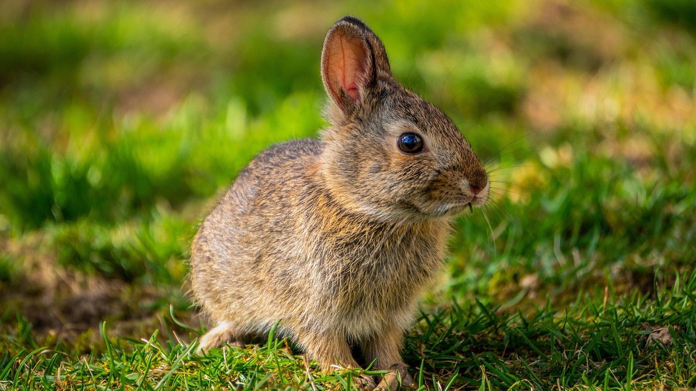
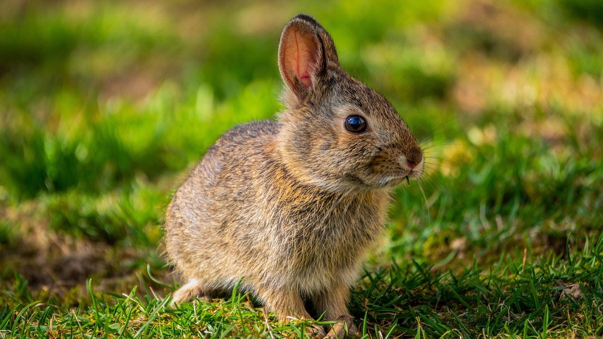
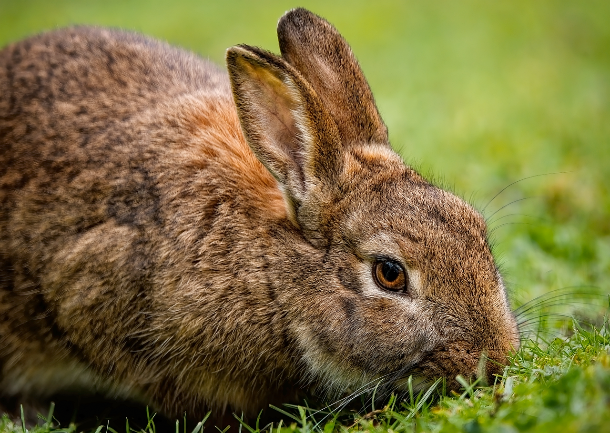
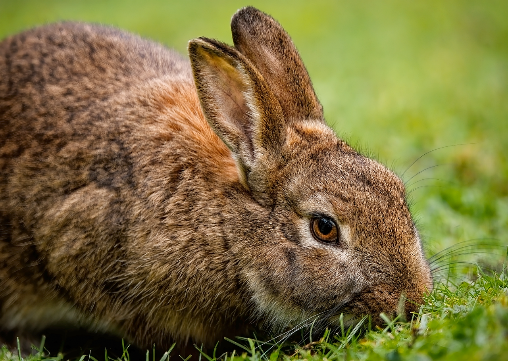
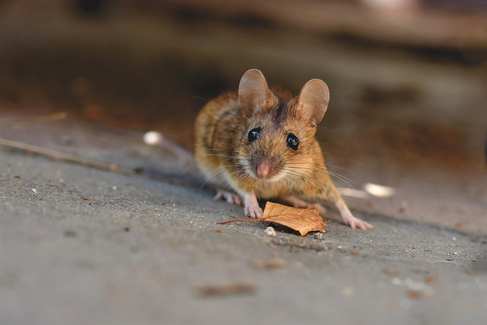
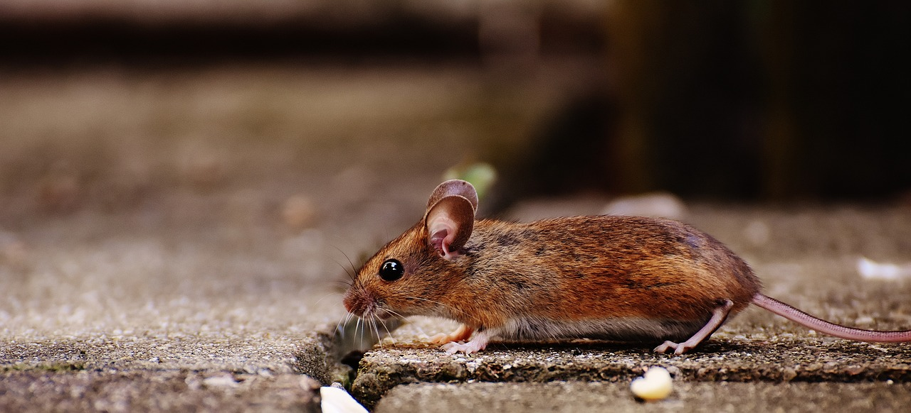
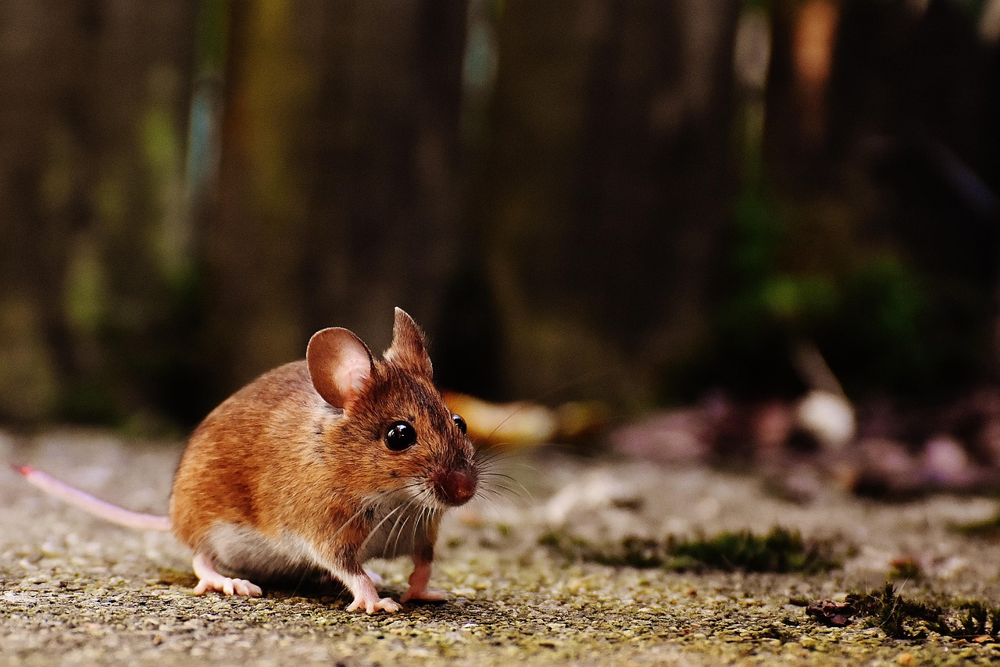
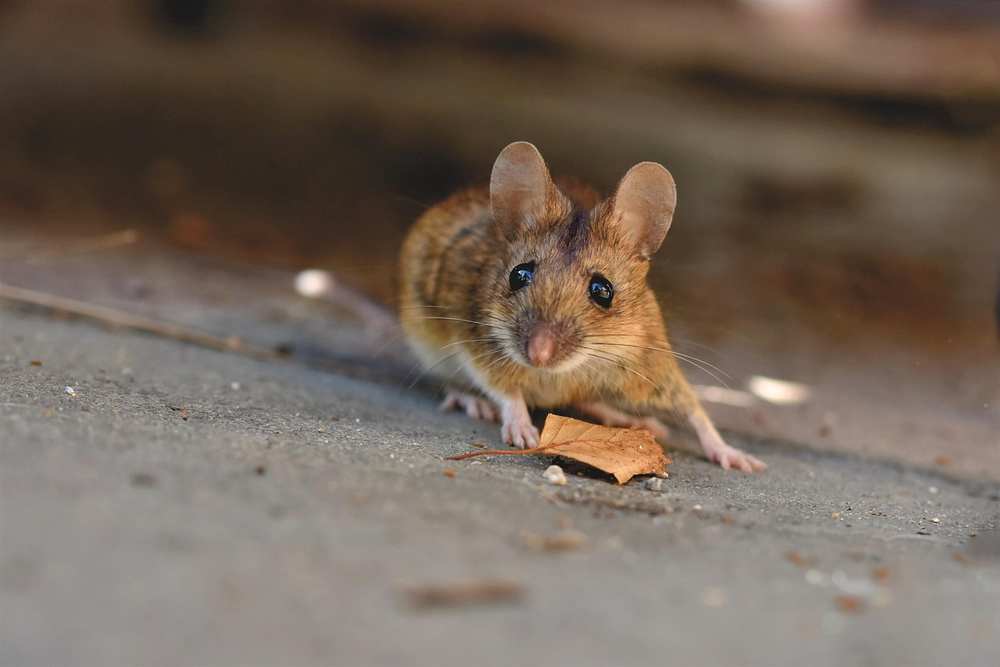
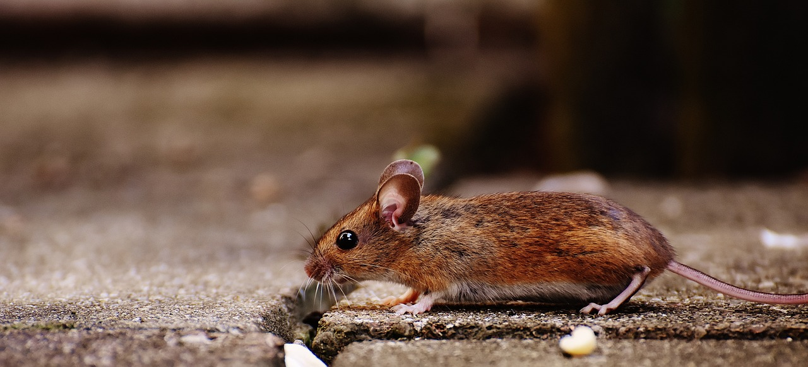
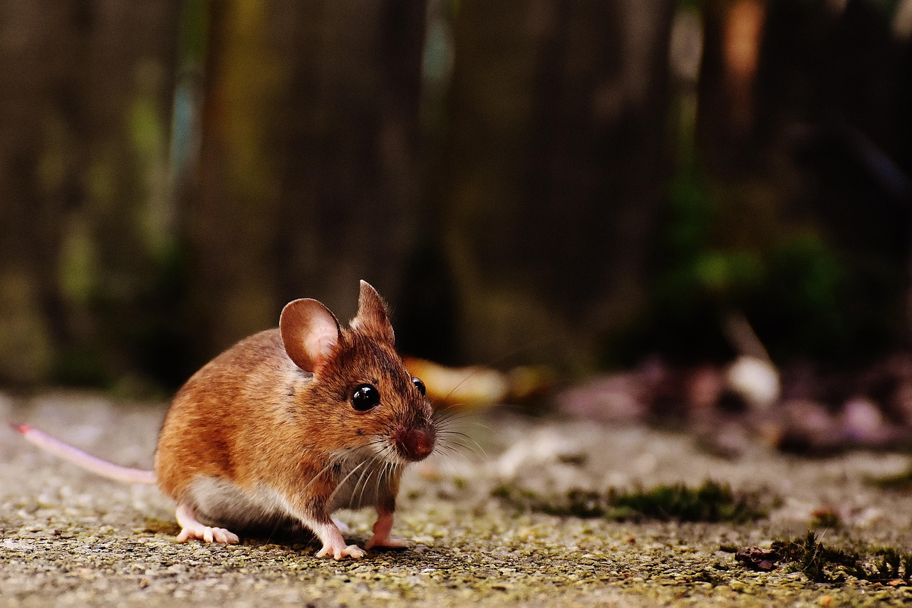

Guaxinins são onívoros e vivem principalmente nas Américas. São conhecidos por sua inteligência, patas ágeis (semelhantes a mãos) e a famosa "máscara" preta ao redor dos olhos. São noturnos e costumam vasculhar lixo em áreas urbanas à procura de comida.
 
  

Coelhos, por outro lado, são herbívoros e vivem em tocas. Têm orelhas longas, dentes incisivos em crescimento contínuo e são muito rápidos. Eles fazem parte da ordem Lagomorpha, diferente dos roedores, apesar da aparência parecida. São presas comuns na natureza e, por isso, muito cautelosos.
   
  
Ratos são roedores pequenos, adaptáveis e também têm dentes que crescem o tempo todo. São encontrados em quase todos os lugares do mundo e podem viver em ambientes urbanos, florestas ou campos. Por serem muito férteis e resistentes, podem se tornar pragas.
Fortnite é um jogo de ação no estilo battle royale, onde 100 jogadores competem entre si até que reste apenas um vencedor. O jogo ficou famoso por sua jogabilidade dinâmica, gráficos com estilo cartunesco e pela possibilidade de construir estruturas durante as partidas, o que adiciona uma camada estratégica. Desenvolvido pela Epic Games, Fortnite é gratuito e recebe atualizações constantes, incluindo eventos especiais e colaborações com personagens famosos da cultura pop, como heróis da Marvel, personagens de anime, cantores e até atletas. O jogo também tem um modo criativo, onde os jogadores podem construir seus próprios mapas e experiências personalizadas.
A Hat in Time é um jogo de plataforma 3D com uma estética colorida e charmosa, inspirado por clássicos como Super Mario 64 e Banjo-Kazooie. O jogador controla Hat Kid, uma garotinha que viaja pelo espaço e acaba perdendo os “Time Pieces”, objetos mágicos que ela precisa recuperar para continuar sua jornada. Cada mundo no jogo tem um estilo visual e mecânica próprios, variando de mansões assombradas a cidades caóticas. O jogo é repleto de humor, personagens engraçados e colecionáveis. Hat Kid também pode usar chapéus diferentes que lhe dão habilidades especiais, como correr mais rápido, soltar explosivos ou usar um gancho para alcançar lugares distantes.
Hatsune Miku, principalmente da série Project DIVA, são jogos de ritmo focados em músicas feitas com Vocaloid, uma tecnologia de voz sintetizada. Hatsune Miku é a personagem mais famosa do grupo, uma idol virtual com cabelo azul e voz doce, que conquistou fãs no mundo todo. Nos jogos, o objetivo é apertar os botões no ritmo das músicas enquanto cenas animadas mostram performances da Miku e de outros personagens, como Kagamine Rin e Len, Megurine Luka, KAITO e MEIKO. Os jogos oferecem várias músicas, níveis de dificuldade, roupas customizáveis (chamadas de “modules”) e uma apresentação visual inspirada em shows virtuais. São perfeitos para quem gosta de música japonesa e jogos de precisão.
Daft Punk foi uma dupla francesa de música eletrônica formada por Thomas Bangalter e Guy-Manuel de Homem-Christo. Ativos de 1993 até 2021, eles se tornaram ícones da música eletrônica mundial. Conhecidos pelos seus capacetes de robôs e estética futurista, o Daft Punk foi responsável por álbuns aclamados como Homework, Discovery e Random Access Memories. Este último ganhou o Grammy de Álbum do Ano em 2014. Suas músicas misturam house, disco, funk e synthpop, criando uma sonoridade única e dançante. Canções como “One More Time”, “Harder, Better, Faster, Stronger” e “Get Lucky” são clássicos modernos. Além da música, o Daft Punk também ficou conhecido pela preocupação com a identidade visual e pelo mistério em torno de suas personas, quase nunca aparecendo sem seus capacetes. Em 2021, anunciaram o fim da dupla com um vídeo simbólico intitulado Epilogue.
Linkin Park foi uma das bandas mais influentes do início dos anos 2000, especialmente no gênero nu metal e rock alternativo. Formada na Califórnia em 1996, a banda misturava elementos de rock pesado, rap, música eletrônica e até pop. O vocal era dividido entre Chester Bennington, com vocais melódicos e gritos intensos, e Mike Shinoda, que também fazia raps e produzia. O álbum de estreia Hybrid Theory (2000) foi um sucesso estrondoso, com faixas como “In the End”, “Crawling” e “One Step Closer”. Seu som falava sobre conflitos internos, ansiedade, dor e superação — temas que tocaram profundamente uma geração. Com o tempo, a banda experimentou novos estilos, como em Minutes to Midnight e A Thousand Suns, e mesmo com mudanças sonoras, manteve grande sucesso. A morte de Chester Bennington em 2017 foi um choque para os fãs e deixou um grande vazio no mundo da música. Desde então, a banda entrou em hiato, embora os membros continuem ativos em outros projetos.
Gorillaz é uma banda virtual criada pelo músico Damon Albarn (vocalista do Blur) e pelo artista Jamie Hewlett (co-criador da HQ Tank Girl). Surgida no final dos anos 1990, Gorillaz se destacou por ser uma "banda de desenho animado", com personagens fictícios — 2D, Murdoc, Noodle e Russel — representando os membros do grupo. A proposta era inovadora: músicas que misturam rock, hip-hop, eletrônico, reggae, e pop, combinadas com animações, vídeos e narrativas criativas. O primeiro álbum, Gorillaz (2001), trouxe sucessos como “Clint Eastwood” e “19-2000”. Já o álbum Demon Days (2005) elevou a banda a outro nível com músicas como “Feel Good Inc.” e “DARE”. Gorillaz é conhecida por colaborar com uma grande variedade de artistas, como De La Soul, Lou Reed, Snoop Dogg, Elton John, entre outros. Mesmo sendo "virtuais", os integrantes da banda têm personalidades, histórias e até brigas, tudo isso alimentando um universo fictício rico e divertido, que envolve música, arte e tecnologia.
O badminton é um esporte de raquete jogado individualmente ou em duplas, onde os jogadores usam raquetes leves para rebater um volante (ou peteca) por cima de uma rede. O objetivo é fazer com que o volante caia no campo adversário e evitar que ele toque o chão do seu lado. A quadra tem 13,4 metros de comprimento, e a rede fica a 1,55 metro de altura. Os jogos são disputados em melhor de três sets, cada um com até 21 pontos. O esporte é muito popular na Ásia, principalmente na China, Indonésia, Índia e Coreia do Sul, e é olímpico desde 1992. Além de competitivo, o badminton melhora a agilidade, os reflexos e o condicionamento físico.